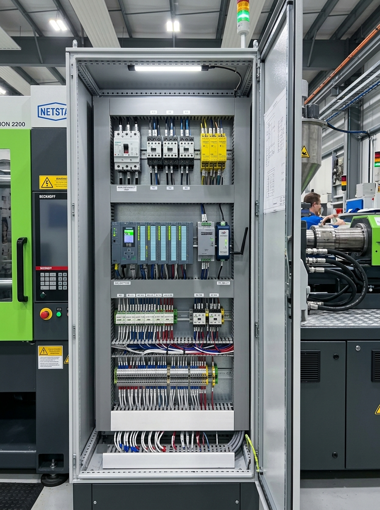

End-to-End Monitoring Architecture
From machine electrical terminals to wireless edge, on-premise factory server, and live online web dashboard
Four-Tier Data Pipeline (Detailed Flow)
How individual machine events are captured, debounced, transmitted locally over Wi-Fi, cached on-premises, and synchronized with your company's internet web application:
Step-by-Step Walkthrough of the Data Lifecycle
Physical Event Capture on the Machine
When a Netstal Diskjet 600 completes a molding cycle, its mold clamping toggle releases or the mechanical limit switch closes. This triggers a 24V DC rising/falling voltage edge. Simultaneously, the machine's external Andon stack light outputs 24V DC to its Green (Run), Yellow (Idle/Warmup), or Red (Fault) light.
Optoelectronic Isolation & Edge Processing (ESP32)
The 24V DC signals enter the PC817 Optocoupler board, keeping the high-noise industrial machine power completely separate from the microcontroller. The optocoupler pulls an ESP32 GPIO pin to GND. A hardware interrupt service routine (ISR) on the ESP32 captures the exact millisecond timestamp, debounces contact bounce, calculates the elapsed cycle time (e.g. 2.84s), and increments the machine's total shot counter.
Local Wireless Network Transmission (Wi-Fi to Local Server)
The ESP32 uses its external magnetic antenna (placed outside the steel machine housing) to transmit a compact HTTP POST JSON payload over the local plant Wi-Fi to the Local Factory Server at http://192.168.10.50:5000/api/v1/telemetry. This happens on every completed shot or on a 5-second heartbeat.
On-Premises Store-and-Forward Buffering
The Local Factory Server ingests the telemetry into a local SQLite/TimescaleDB database. If the factory's internet connection is slow or drops completely, zero data is lost—the local server buffers all records with exact millisecond timestamps.
Encrypted Cloud Synchronization & Web UI Live Streaming
A background worker on the Local Factory Server flushes buffered records in compressed HTTPS POST batches to the Internet Cloud Web Server. The cloud backend ingests the data, computes plant OEE, and broadcasts live telemetry over WebSockets to your company's web-based dashboard in real time.
Plant Machine Inventory & Specification Matrix
Complete data transcribed directly from Hardware list.pdf (173 Machines total)
| Brand | Trade Name | Model | Tonnage (T) | Year | Tiebar Distance (mm) | Mould Height (mm) | Max Shot Weight (g) | Quantity | Share of Plant |
|---|---|---|---|---|---|---|---|---|---|
| Netstal | Diskjet | 600 | 60 | 2000 | 30 Triangle | 180 – 200 | 43 g | 150 | 86.7% (Dominant) |
| Netstal | Sycap | N235/90 | 90 | 1990 | 360 × 360 | 100 – 400 | 150 g | 1 | 0.6% |
| Netstal | Sycap | 580/140 | 140 | 1990 | 370 × 410 | 200 – 470 | 190 g | 1 | 0.6% |
| Netstal | Sycap | 580/150 | 150 | 1990 | 460 × 460 | 400 – 670 | 307 g | 4 | 2.3% |
| Netstal | Sycap | 1570/300 | 200 | 1990 | 641 × 530 | 250 – 600 | 970 g | 1 | 0.6% |
| Netstal | Synergy | 1500 K | 150 | 2007 | 460 × 460 | 250 – 550 | 193 g | 5 | 2.9% |
| Netstal | Synergy / 2 in one | 4200 | 420 | 2007 | 713 × 713 | 400 – 750 | 719 g | 1 | 0.6% |
| Netstal | Synergy | 5000 | 500 | 2007 | 920 × 920 | 450 – 950 | 2,196 g | 1 | 0.6% |
| Netstal | Synergy | 6000 | 600 | 2007 | 1020 × 1020 | 500 – 1000 | 2,711 g | 2 | 1.2% |
| BMB | KW-35-PI | 350 | 350 | 2006 | 710 × 630 | 350 – 850 | 1,290 g | 2 | 1.2% |
| Haitian (Hitian) | Gold 120 | 120 | 120 | 2004 | 420 × 420 | 150 – 430 | 195 g | 1 | 0.6% |
| Haitian (Hitian) | Gold 250 | 250 | 250 | 2004 | 580 × 580 | 220 – 550 | 520 g | 1 | 0.6% |
| Haitian (Hitian) | Gold 300 | 300 | 300 | 2004 | 600 × 600 | 250 – 660 | 776 g | 1 | 0.6% |
| Negri Bossi | NB 250 | 250 | 250 | 1995 | 570 × 570 | 280 – 600 | 1,154 g | 1 | 0.6% |
| Engel | 110 Victory | 330/110 | 110 | 2000 | 600 – 730 (Tiebarless) | 250 – 750 | 154 g | 1 | 0.6% |
| TOTAL FLEET COUNT (تعداد کل ماشین های تزریق): | 173 Units | 100.0% | |||||||
Netstal SynErgy & Diskjet Technical Reference
Documented directly from the official 37-page brochure Technical data.pdf
Electronic & Control Architecture (Steuerung)
| Controller Type | DSP Control, multi-processor system with hybrid CISC and RISC processors |
| Closed-Loop Engine | SYCAP (System for Computer Aided Plasticizing): active control of dosing, injection, holding pressure, clamping force, and line pressure |
| Operator Interface | GRAPHTRACK visualization with real-time nominal vs. actual curve overlay |
| Network Interface | TCP/IP Protocol (RJ45 network board built-in or slot option) |
| Host Interface (MES) | Leitrechner-Schnittstelle supporting Euromap 15 / Euromap 63 file-transfer protocol |
| Automation Standards | Euromap 18 (mechanical robot top interface), Euromap 12 / 67 (electrical robot handshake) |
| Quality Package | 100% Q-monitoring with internal logbook holding up to 3,000 process error entries |
Sensors & Physical Instrumentation
| Stroke Measurement | Ultrasonic non-contact transducers with 0.1 mm resolution on clamping unit, injection unit, and ejector |
| Hydraulic System | 210 bar line pressure digitally closed-loop controlled via constant & variable displacement pumps + accumulator battery |
| Dry Cycle Speed | Fast dry cycle times: 1.0s to 1.8s (Diskjet optical cycles reach ~2.5s full cycle) |
| Drive Power Range | Electric motors from 15 kW up to 160 kW |
| Barrel Heating | High-precision thermocouples up to 500°C with individual zone current monitoring |
| Hydraulic Fluid Spec | HLP-68 (DIN 51524 Teil 2), ISO VG 68, Viscosity Index VI ≥ 95, zinc-free |
| Noise & Safety | 75 dB(A) acoustic rating under EN 201; 2-stage oil filter and level supervision |
SynErgy Clamping & Injection Technical Spectrum (From PDF Pages 4–14)
| Clamping Force (kN) | Distance Between Tiebars (mm) | Dry Cycle Time (sec) | Standard Motor Power (kW) | Max Injection Speed | Oil Tank Volume (L) | Net Weight (kg) |
|---|---|---|---|---|---|---|
| 600 kN (60T) | 410 × 410 | 1.0 s | 15 / 22 / 30 kW | Up to 1000 mm/s | 230 L | 6,600 kg |
| 800 kN (80T) | 410 × 410 | 1.0 s | 15 / 22 / 30 kW | Up to 1000 mm/s | 230 L | 6,700 kg |
| 1000 / 1200 kN | 460 × 460 | 1.0 – 1.1 s | 22 / 30 / 37 kW | Up to 1000 mm/s | 300 L | 7,500 – 7,800 kg |
| 1500 K / 1500 kN | 460 × 460 / 510 × 510 | 1.2 s | 30 / 37 / 45 kW | Up to 1000 mm/s | 300 – 370 L | 9,700 – 11,200 kg |
| 4200 K / 5000 kN | 713 × 713 / 920 × 920 | 1.8 – 2.1 s | 55 / 75 / 90 kW | High-speed accumulation | 445 – 800 L | 24,800 – 42,000 kg |
| 6000 / 8000 kN | 1020 × 1020 / 1220 × 1220 | 2.2 – 2.5 s | 90 / 132 / 160 kW | High-speed accumulation | 800 – 950 L | 54,000 – 73,100 kg |
Complete Connectors, Interfaces & I/O Ports on Netstal Diskjet 600
Detailed breakdown of all physical ports, industrial sockets, communication buses, and electrical interfaces built into the 150 Netstal Diskjet 600 machines (and what data they provide):
| Interface / Connector | Physical Connector Type | Subsystem & Location | Signals & Information Provided | Monitoring & Integration Value |
|---|---|---|---|---|
| Euromap 12 / 67 Robot Interface | 32-Pin / 50-Pin Harting Han Industrial Heavy-Duty Socket | Side electrical cabinet (Connects to disc take-out robot) |
• Mold Open Position Reached • Mold Closed Interlock • Ejector Forward / Retract status • Robot In-Mold Safety Flag • Good / Reject Disc Sorting Signal |
Crucial for OEE: The Reject Disc trigger gives exact scrap/rejection counts directly from machine quality logic without manual inspection. |
| Host Computer Serial (Leitrechner) | DB9 / DB25 RS-232 or RS-422/485 Screw Terminal Block | SYCAP Multi-Processor DSP rack inside control cabinet |
• ASCII session stream (Euromap 15 / 63) • Peak injection pressure ($P_{\text{inj}}$ bar) • Cushion stroke ($0.1\,\text{mm}$) • Plasticizing time & Injection speed • Error codes from 3,000-entry logbook |
Direct digital telemetry of real injection dynamics without external analog sensors. Accessible via MAX485/MAX3232 to ESP32 UART2. |
| Ethernet Network Port (TCP/IP) | RJ45 8P8C Modular Jack (10/100 Mbps) | DSP CPU board / Communication daughtercard |
• TCP/IP socket data stream • Euromap 63 over TCP/IP protocol • Mold recipe upload/download • Netstal Sycap remote service protocol |
Allows direct network socket communication to the Local Factory Server for recipe management and high-speed process data dumps. |
| Mold Cavity Pressure Port (Werkzeuginnendruck) | BNC Coaxial or M12 4-Pin Circular Connector | Mold platen interface panel (Connects to Kistler piezo sensors) |
• $0\text{--}10\,\text{V}$ analog or charge signal • Live dynamic pressure curve inside the CD disc mold cavity |
Provides microsecond cavity filling curve; detects flash and short shots before the mold even opens. |
| Printer Port (Druckerschnittstelle) | DB25 Female Parallel (Centronics) or DB9 Serial | Operator console rear or main cabinet door |
• Shift production summaries • Parameter printouts & statistical variance • Historical alarm & disturbance listings |
Can be tapped by an ESP32 as a "Virtual Printer" to automatically capture and parse shift summaries into JSON without modifying machine software. |
| Cycle Switched Sockets & Relays | 230V AC Industrial Sockets + Dry Relay Contact Terminals | Lower control cabinet |
• Color dosing feeder trigger pulse • Reject bin changer trigger pulse • External acoustic horn & optical beacon output • Conveyor belt advance pulse |
Taps directly into peripheral sync signals; confirms peripheral hopper loaders and chillers are operating synchronously with molding. |
| SYCAP DSP Diagnostic Test Points | 2mm Miniature Banana Jacks / BNC Test Points | Front of SYCAP DSP controller rack |
• System Hydraulic Pressure ($0\text{--}10\,\text{V} = 0\text{--}210\,\text{bar}$) • Servo Valve Command Voltage ($0\text{--}10\,\text{V}$) • Ultrasonic Stroke Analog Feedback |
Used for high-speed oscilloscope data acquisition (10 kHz sampling) during hydraulic valve tuning. |
| Data Storage / Floppy Port | 34-Pin IDC Ribbon Header (Standard 3.5" 1.44MB floppy drive) | Front operator control console |
• Tool recipe configurations (floppy diskette) • Quality package parameter limits • Can be retrofitted with Gotek USB floppy emulator |
Enables digital recipe backup and setup archiving across all 150 Diskjet machines. |
Comparison of the 3 Interfacing Solutions
Evaluating Official Vendor Gateways vs. Industrial Open Microcontrollers vs. ESP32 Wi-Fi Adapters
Official OEM & Commercial Gateways
Euromap 63 Middleware / Industrial I/O Modules (Moxa/Advantech/Siemens)
- Factory certified (CE, UL, IP-rated)
- Out-of-the-box DIN-rail mounting
- Direct MQTT, Modbus TCP, REST API
- Very high total cost across 173 machines ($35,000 – $100,000+)
- Euromap 63 software licenses require OEM activation fees
- Cannot extract data from 1990 Sycaps easily without extra I/O cards
Industrial Open Controllers
Arduino Opta Micro-PLC / Portenta Machine Control / Revolution Pi
- Native 24V industrial logic (IEC 61131-3 & C++)
- Integrated optocouplers & surge protection
- Onboard RJ45 Ethernet + RS485 Modbus
- Official Arduino Industrial / Finder warranty
- Moderate-to-high cost for 173 machines (~$20,000 – $35,000)
- Bulkier size inside tight CD molding electrical cabinets
Custom ESP32 Wi-Fi Adapter
ESP32-WROOM-32U + External Magnetic Antenna + 4-Ch 24V Opto Isolation
- Unbeatable Cost: <$5,500 total for all 173 machines
- External Magnetic Wi-Fi Antenna: Defeats Faraday cage steel cabinets
- Microsecond Precision: Hardware interrupts catch 2.2s disc mold cycles
- 100% Non-Invasive: 4 wire connections to stack light & limit switch
- Lightweight HTTP JSON directly into Local Factory Server
- Requires custom PCB assembly or pre-assembled DIN carrier board
Microcontroller Hardware Modules & Wiring Guide
Complete pinout, electrical schematic, module selection, and installation instructions
Visual Hardware Component Gallery & Module Specifications
Accurate physical illustrations of all 6 modules and components required to build the IoT adapter for each injection machine:
1. ESP32-WROOM-32U Microcontroller
Dual-core 240MHz Xtensa LX6 MCU with built-in Wi-Fi & Bluetooth. Crucially equipped with a miniature gold IPEX (U.FL) RF port instead of a PCB antenna, enabling an external antenna lead outside the metal cabinet.
2. 2.4 GHz 7 dBi Magnetic Antenna
High-gain omnidirectional antenna with strong neodymium magnetic base and 1.5-meter low-loss RG174 coaxial cable. Adheres firmly to the machine roof outside the metal enclosure.
3. 4-Channel PC817 Optocoupler
Provides 3,000V optical barrier between machine 24V DC circuitry and the ESP32. Converts high-voltage lamp/switch lines into clean 3.3V active-low signals with indicator LEDs.
4. Mean Well HDR-15-5 Power Supply
Ultra-slim 1SU (17.5mm wide) DIN-rail power regulator. Converts machine's auxiliary 24V DC bus (or 100-240V AC cabinet mains) into a rock-solid, ripple-free 5V DC supply for the MCU.
5. SCT-013-030 Current Clamp
Non-invasive split-core current transformer. Snaps easily around the primary 400V motor conductor without cutting wires. Outputs a calibrated $0\text{--}1\,\text{V}_\text{RMS}$ analog signal proportional to real-time pump motor load.
6. DS18B20 Waterproof Temp Probe
Stainless steel encapsulated digital temperature sensor ($6\times 50\,\text{mm}$) with a 2-meter waterproof silicone cable. Attached to the hydraulic oil tank reservoir to monitor fluid degradation.
Physical Wiring Diagram & Electrical Interconnections
Connect wires from the machine's terminal blocks into the optocoupler module, then to the ESP32 GPIO headers:
Real-World Machine Electrical Panel (Inside Netstal Cabinet)
Actual photographic reference of an industrial Netstal injection molding machine control cabinet, showing the internal layout, high-voltage contactor zone, 24V control section, and exact IoT adapter mounting location:

Electrical Cabinet Internal Zones & Connection Points
Contains the 3-phase main circuit breaker, motor contactors for the hydraulic pump, and yellow safety gate interlock relays.
Houses the Netstal SYCAP multi-processor DSP rack (with green/yellow status LEDs), 24V DC auxiliary power supply, and standard 35mm DIN mounting rails.
Multi-deck pass-through screw terminal strips and slotted wire raceways connecting to all external machine sensors, switches, and valves.
TB-24V+, TB-0V, Andon Red/Yellow/Green, and Mold Clamped switch.
Visible atop the cabinet is the 3-color Andon beacon. The steel roof provides an unobstructed surface facing the factory ceiling.
Step-by-Step Electrical Installation Guide
1. Safety & Power Down
Always switch off the machine main breaker (400V AC) before opening the electrical control panel. Test with a calibrated multimeter to confirm zero residual voltage.
2. DIN Rail Placement
Snap the custom DIN rail module housing (containing ESP32, DC-DC converter, and optocoupler board) onto an available slot on the 35mm lower control rail next to the machine's 24V terminal strip.
3. Terminal Connections (Non-Invasive Tapping)
Use 0.5 mm² (20 AWG) flexible copper wire with bootlace ferrules. Insert wires into the existing screw clamps of the Andon stack light and mold-closed limit switch. No cutting of factory wires is required.
4. Antenna Cable Routing
Route the RG174 coaxial cable out of the cabinet through an existing top cable gland or rubber grommet. Snap the magnetic base of the 2.4 GHz antenna onto the highest flat steel surface of the machine roof for optimal line-of-sight to ceiling Wi-Fi access points.
5. Oil Temperature & CT Clamp
Attach the DS18B20 stainless steel probe to the side of the hydraulic oil reservoir using high-temperature thermal adhesive or a magnetic clip. Clip the SCT-013 around Phase L1 of the main pump feed.
6. Verification & Power-Up
Power up the machine. The ESP32's onboard LED will blink as it acquires an IP from the local factory Wi-Fi and begins streaming JSON packets.
Complete Terminal-by-Terminal Hardware Wiring Guide
Exact terminal connection matrix connecting the physical machine terminals, isolation module, sensors, power supply, and ESP32 microcontroller pins:
| Connection Link | Source Terminal (Machine / Sensor) | Intermediate Module / Component | Destination Pin (ESP32) | Wire Spec & Signal Properties |
|---|---|---|---|---|
| Module Power (+24V) | Machine Terminal TB-24V+ (Aux DC bus) |
Mean Well HDR-15-5 (VIN+) or LM2596HV (IN+) |
Regulated +5V to ESP32 VIN / 5V pin |
0.75 mm² (Red wire). Sourced from machine's fused 24V control power supply. |
| Module Ground (0V) | Machine Terminal TB-0V / GND |
Mean Well (VIN- / VOUT-) step-down regulator |
Regulated 0V to ESP32 GND pin |
0.75 mm² (Black wire). Common return line. |
| Alarm Status (Red) | Andon Red Lamp Terminal (+24V active) |
PC817 Optocoupler IN1+ / IN1- (to 0V) |
Opto OUT1 to ESP32 GPIO 14 |
0.5 mm² (Red/White). Opto output pulls GPIO 14 to GND when alarm is active (Active Low). |
| Idle Status (Yellow) | Andon Yellow Lamp Terminal (+24V active) |
PC817 Optocoupler IN2+ / IN2- (to 0V) |
Opto OUT2 to ESP32 GPIO 27 |
0.5 mm² (Yellow/White). Active Low when machine is idling, heating, or waiting for operator. |
| Run Status (Green) | Andon Green Lamp Terminal (+24V active) |
PC817 Optocoupler IN3+ / IN3- (to 0V) |
Opto OUT3 to ESP32 GPIO 26 |
0.5 mm² (Green/White). Active Low when machine is operating in automatic cycle mode. |
| Cycle Shot Pulse | Mold Clamped Switch / Ejector Pulse (+24V pulse) |
PC817 Optocoupler IN4+ / IN4- (to 0V) |
Opto OUT4 to ESP32 GPIO 33 |
0.5 mm² Shielded twisted pair (Blue/White). Triggers hardware interrupt on falling edge. |
| Pump Motor Current (CT) | SCT-013-030 Clamp around Phase L1 main motor wire | Burden 33Ω resistor + DC Bias Divider (10k/10k to 3.3V) + 10μF cap | Conditioned AC wave to ESP32 GPIO 34 (ADC1) |
3.5mm stereo cable / twisted pair. Outputs 0–1V AC RMS centered at 1.65V DC offset. |
| Hydraulic Oil Temp | DS18B20 Waterproof Stainless Probe (attached to oil tank) | 4.7kΩ pull-up resistor between Data line and 3.3V | Yellow/White Data wire to ESP32 GPIO 04 |
Dallas 1-Wire bus. Red wire to 3.3V, Black wire to GND, Yellow to GPIO 04. |
| Wi-Fi RF Link | 7 dBi Omnidirectional Antenna (magnetic base on cabinet roof) | 1.5m RG174 low-loss coaxial cable | SMA Male to IPEX (U.FL) connector on ESP32-WROOM-32U | 50Ω RF impedance. Allows wireless transmission out of the steel Faraday cage. |
Communication Protocols: How Data Communicates Between Machine and Microcontroller
Depending on your monitoring depth and machine vintage, there are two distinct communication protocol layers between the physical injection machine and the IoT microcontroller:
Protocol Method A: Hardware Discrete I/O & Edge Interrupt Signaling
This protocol communicates machine states and cycles through physically isolated voltage pulses and state transitions. It requires zero software access or licenses from machine OEMs.
- Physical Layer: 24V DC level and transient pulses from machine relays/switches.
- Electrical Isolation: PC817 optoisolators provide a 3,000V optical barrier. 24V energizes an internal infrared LED, activating a phototransistor on the ESP32 side.
- Signaling Logic:
• Lamp Energized (24V on): Optocoupler pulls ESP32 GPIO to LOW (0V / GND).
• Lamp Off (0V): Internal pull-up resistor holds ESP32 GPIO at HIGH (3.3V). - Timing & Synchronization Protocol:
• Edge Detection: Falling-edge hardware interrupt captures mold closing with microsecond resolution.
• Software Anti-Bounce: Rejection filter discards secondary relay chatter under 1,200 ms.
• Cycle Calculation: $t_{\text{cycle}} = \text{millis}() - \text{last\_pulse\_millis}$.
Protocol Method B: Serial Fieldbus & Euromap 63 / Modbus Protocols
For deep parameters (exact hydraulic pressures, cushion position, 500°C barrel heating zones), the microcontroller communicates directly with the machine's central control board via a serial bus.
- Physical Layer: RS-485 (half-duplex differential pair:
A+,B-) or RS-232 (TX,RX,GND) using a MAX485 or MAX3232 transceiver connected to ESP32 HardwareUART2(GPIO 16 / 17). - Protocol Standard 1 (Euromap 63 / Euromap 15):
• Session-based ASCII file/command protocol standardized by the European Plastics Machinery Association.
• Microcontroller issues poll requests (e.g.?GET_ACTUAL_VALUES) and receives formatted key-value blocks (INJ_PRES=1840; CUSHION=3.2; TEMP_Z1=245.5). - Protocol Standard 2 (Modbus RTU over RS-485):
• Baud Rate: 9,600 or 19,200 bps, 8 data bits, 1 stop bit, even parity.
• Microcontroller acts as Modbus Master, issuing Function Code0x03(Read Holding Registers) to read process registers into internal variables. - Protocol Standard 3 (Euromap 77 / OPC UA over TCP/IP):
• Available on the 9 newer Netstal SynErgy machines with RJ45 Ethernet cards, communicating directly with the Local Factory Server.
Sensor-to-Microcontroller Native Communication Protocols
Digital multidrop communication over a single data wire (GPIO 04) with an external 4.7kΩ pull-up resistor. The ESP32 sends a reset pulse, requests temperature conversion (0x44), and reads 9 bytes of scratchpad memory containing calibrated Celsius data with 12-bit resolution (±0.0625°C).
Magnetic induction creates a secondary AC current proportional to motor load (100A:50mA ratio). A 33Ω burden resistor converts this to an AC voltage (0–1V RMS). A voltage divider with decoupling capacitor adds a 1.65V DC bias, enabling the ESP32's 12-bit ADC (GPIO 34) to sample the full sine wave at 1,000 samples/sec to compute true RMS current.
Remote Control Capabilities: What Can (and Cannot) Be Safely Controlled via Web Dashboard
Engineering evaluation of remote switching, cycle automation, and international machinery safety directives (EN 201 / ISO 13849-1):
What CAN Be Safely Controlled Remotely (Allowed & Beneficial)
-
1. Controlled Soft Production Stop (Cycle Pause):
ESP32 triggers an isolated relay pulse across the machine's "Stop after current shot" terminal. The machine finishes molding the current disc, ejects it, and pauses safely with mold open, preventing plastic degradation in the hot barrel. -
2. Automated Barrel Pre-Heating Scheduling (Shift Warmup):
The web dashboard triggers barrel heaters at 05:30 AM before the morning shift starts. By 07:00 AM, the 280°C polycarbonate melt zone is fully stabilized, saving 90 minutes of daily lost operator time. -
3. Night & Lunch Temperature Setback:
Remotely drops barrel temperatures to 150°C during planned plant downtime to prevent polycarbonate discoloration and save hundreds of kilowatt-hours. -
4. Automated Scrap Diverter / Reject Chute Override:
If the cloud SPC algorithm detects 3 consecutive out-of-spec cycles, it signals the ESP32 to trip the reject diverter gate, routing bad discs into the regrind bin until an engineer inspects the mold. -
5. Emergency Lockout / Power Inhibit:
Authorized plant managers with 2-Factor Authentication can remotely trip the machine's Undervoltage Release (UVR) coil on the main 400V breaker in catastrophic emergencies.
Hardware Add-On & Wiring for Remote Control
To equip the IoT adapter with remote functionality, simply connect a 2-Channel or 4-Channel 5V Optocoupled Relay Board to the ESP32:
| Relay Channel | ESP32 Pin | Machine Connection | Function |
|---|---|---|---|
| Relay 1 (NO) | GPIO 18 |
Machine TB-CYCLE-STOP |
Pulsed 1 sec to command graceful stop |
| Relay 2 (NO) | GPIO 19 |
Heater Standby Contact | Toggles 280°C Run vs 150°C Standby |
| Relay 3 (NO) | GPIO 21 |
Reject Gate Solenoid | Forces disc diverter to scrap chute |
End-to-End Software Implementation & Programs
Complete source code for the machine ESP32 adapter and the local factory edge server
#include <WiFi.h>
#include <HTTPClient.h>
#include <ArduinoJson.h>
#include <OneWire.h>
#include <DallasTemperature.h>
// --- CONFIGURATION ---
const char* WIFI_SSID = "CDCompany_Factory_IoT";
const char* WIFI_PASSWORD = "IndustrialSecure2026";
const char* MACHINE_ID = "DJ-042"; // Unique ID for each of the 173 machines
const char* LOCAL_SERVER_URL = "http://192.168.10.50:5000/api/v1/telemetry";
// --- PIN DEFINITIONS ---
#define PIN_ALARM_RED 14 // Optocoupler CH1
#define PIN_IDLE_YELLOW 27 // Optocoupler CH2
#define PIN_RUN_GREEN 26 // Optocoupler CH3
#define PIN_CYCLE_PULSE 33 // Optocoupler CH4 (Mold Clamp Pulse)
#define PIN_ONEWIRE_BUS 4 // DS18B20 Oil Temp Probe
#define PIN_CT_ANALOG 34 // SCT-013 Current Clamp ADC
// --- VOLATILE PROCESS VARIABLES ---
volatile unsigned long g_shotCount = 0;
volatile unsigned long g_lastShotMillis = 0;
volatile float g_lastCycleTimeSec = 0.0;
volatile bool g_shotEventFlag = false;
OneWire oneWire(PIN_ONEWIRE_BUS);
DallasTemperature tempSensors(&oneWire);
// --- HARDWARE INTERRUPT (FALLING EDGE ON MOLD CLOSE) ---
void IRAM_ATTR onCyclePulse() {
unsigned long now = millis();
// Software debounce: Diskjet minimum optical cycle is ~2.0s; reject noise under 1200ms
if (now - g_lastShotMillis > 1200) {
if (g_lastShotMillis > 0) {
g_lastCycleTimeSec = (now - g_lastShotMillis) / 1000.0;
}
g_shotCount++;
g_lastShotMillis = now;
g_shotEventFlag = true;
}
}
// --- MACHINE STATUS DETECTOR ---
const char* determineMachineStatus() {
// Optocoupler outputs are ACTIVE LOW (pulled to GND when 24V lamp is energized)
bool redActive = (digitalRead(PIN_ALARM_RED) == LOW);
bool yellowActive = (digitalRead(PIN_IDLE_YELLOW) == LOW);
bool greenActive = (digitalRead(PIN_RUN_GREEN) == LOW);
if (redActive) return "ALARM";
if (greenActive) return "RUNNING";
if (yellowActive) return "IDLE";
return "STANDBY";
}
// --- READ MOTOR CURRENT (RMS) ---
float readMotorCurrentRMS() {
long sumOfSquares = 0;
int samples = 300;
for (int i = 0; i < samples; i++) {
int raw = analogRead(PIN_CT_ANALOG) - 2048; // Centered at 1.65V (2048)
sumOfSquares += (long)raw * raw;
delayMicroseconds(100);
}
float rmsRaw = sqrt(sumOfSquares / (float)samples);
// Calibration factor: 30A full scale = 3.3V
float currentAmps = (rmsRaw / 2048.0) * 30.0;
return currentAmps;
}
void setup() {
Serial.begin(115200);
// Configure isolated digital inputs with internal pullups
pinMode(PIN_ALARM_RED, INPUT_PULLUP);
pinMode(PIN_IDLE_YELLOW, INPUT_PULLUP);
pinMode(PIN_RUN_GREEN, INPUT_PULLUP);
pinMode(PIN_CYCLE_PULSE, INPUT_PULLUP);
// Attach interrupt to shot pulse pin
attachInterrupt(digitalPinToInterrupt(PIN_CYCLE_PULSE), onCyclePulse, FALLING);
// Initialize temperature sensor & Wi-Fi
tempSensors.begin();
WiFi.mode(WIFI_STA);
WiFi.begin(WIFI_SSID, WIFI_PASSWORD);
Serial.println("[IoT] Diskjet Wi-Fi Adapter Initialized.");
}
void sendTelemetryToLocalServer() {
if (WiFi.status() != WL_CONNECTED) {
WiFi.reconnect();
return;
}
// Read oil temperature
tempSensors.requestTemperatures();
float oilTemp = tempSensors.getTempCByIndex(0);
if (oilTemp < -50.0 || oilTemp > 125.0) oilTemp = 0.0;
float motorAmps = readMotorCurrentRMS();
// Create JSON Payload
StaticJsonDocument<300> doc;
doc["machine_id"] = MACHINE_ID;
doc["status"] = determineMachineStatus();
doc["total_shots"] = g_shotCount;
doc["cycle_time_s"] = g_lastCycleTimeSec;
doc["motor_current_a"] = motorAmps;
doc["oil_temp_c"] = oilTemp;
doc["uptime_s"] = millis() / 1000;
String jsonPayload;
serializeJson(doc, jsonPayload);
// HTTP POST to Local Factory Server
HTTPClient http;
http.begin(LOCAL_SERVER_URL);
http.addHeader("Content-Type", "application/json");
http.setTimeout(1500); // 1.5s timeout
int httpCode = http.POST(jsonPayload);
if (httpCode > 0) {
Serial.printf("[POST OK] Status: %d | Shots: %lu\n", httpCode, g_shotCount);
} else {
Serial.printf("[POST ERR] Error: %s\n", http.errorToString(httpCode).c_str());
}
http.end();
}
void loop() {
static unsigned long lastHeartbeatMillis = 0;
unsigned long now = millis();
// Transmit on EVERY completed shot event OR every 5 seconds heartbeat
if (g_shotEventFlag || (now - lastHeartbeatMillis >= 5000)) {
g_shotEventFlag = false;
lastHeartbeatMillis = now;
sendTelemetryToLocalServer();
}
}"""
CD-Company Local Factory Server Daemon
Runs on an on-premise industrial PC / server (Ubuntu Linux / Windows Server).
1. Ingests HTTP POST telemetry from 173 ESP32 adapters over local Wi-Fi.
2. Writes records immediately to local SQLite store-and-forward database.
3. Background async worker synchronizes batches with Cloud Web Server via HTTPS.
"""
import asyncio
import sqlite3
import time
import requests
from fastapi import FastAPI, BackgroundTasks
from pydantic import BaseModel
import uvicorn
app = FastAPI(title="CD-Company Factory Edge Ingestion Server")
DB_FILE = "factory_telemetry.db"
CLOUD_ENDPOINT = "https://dashboard.cdcompany.com/api/v1/factory-sync"
CLOUD_API_KEY = "SECURE_API_KEY_CD_FACTORY_2026"
# Pydantic schema matching ESP32 payload
class MachineTelemetry(BaseModel):
machine_id: str
status: str
total_shots: int
cycle_time_s: float
motor_current_a: float
oil_temp_c: float
uptime_s: int
# Initialize local SQLite buffer database
def init_db():
conn = sqlite3.connect(DB_FILE)
c = conn.cursor()
c.execute('''
CREATE TABLE IF NOT EXISTS telemetry (
id INTEGER PRIMARY KEY AUTOINCREMENT,
machine_id TEXT,
status TEXT,
total_shots INTEGER,
cycle_time_s REAL,
motor_current_a REAL,
oil_temp_c REAL,
uptime_s INTEGER,
timestamp_local INTEGER,
is_synced INTEGER DEFAULT 0
)
''')
conn.commit()
conn.close()
init_db()
# HTTP POST endpoint for 173 ESP32 Wi-Fi Adapters
@app.post("/api/v1/telemetry")
async def receive_telemetry(data: MachineTelemetry):
now = int(time.time())
conn = sqlite3.connect(DB_FILE)
c = conn.cursor()
c.execute('''
INSERT INTO telemetry
(machine_id, status, total_shots, cycle_time_s, motor_current_a, oil_temp_c, uptime_s, timestamp_local, is_synced)
VALUES (?, ?, ?, ?, ?, ?, ?, ?, 0)
''', (data.machine_id, data.status, data.total_shots, data.cycle_time_s,
data.motor_current_a, data.oil_temp_c, data.uptime_s, now))
conn.commit()
conn.close()
return {"status": "success", "received_at": now}
# Background Cloud Synchronization Worker
def sync_with_cloud():
while True:
try:
conn = sqlite3.connect(DB_FILE)
c = conn.cursor()
# Fetch up to 100 unsynced records
c.execute("SELECT id, machine_id, status, total_shots, cycle_time_s, motor_current_a, oil_temp_c, uptime_s, timestamp_local FROM telemetry WHERE is_synced = 0 LIMIT 100")
rows = c.fetchall()
if rows:
batch = []
ids = []
for row in rows:
ids.append(row[0])
batch.append({
"id": row[0],
"machine_id": row[1],
"status": row[2],
"total_shots": row[3],
"cycle_time_s": row[4],
"motor_current_a": row[5],
"oil_temp_c": row[6],
"uptime_s": row[7],
"timestamp": row[8]
})
headers = {
"Content-Type": "application/json",
"X-Factory-Key": CLOUD_API_KEY
}
# Forward batch to Internet Cloud Web Dashboard
response = requests.post(CLOUD_ENDPOINT, json={"batch": batch}, headers=headers, timeout=5)
if response.status_code == 200:
# Mark records as synced in local DB
c.execute(f"UPDATE telemetry SET is_synced = 1 WHERE id IN ({','.join(['?']*len(ids))})", ids)
conn.commit()
print(f"[CLOUD SYNC] Successfully synced {len(ids)} records to cloud.")
conn.close()
except Exception as e:
print(f"[CLOUD SYNC ERROR] Internet connection failed: {e}. Data buffered locally.")
time.sleep(2) # Sync interval
@app.on_event("startup")
def startup_event():
import threading
t = threading.Thread(target=sync_with_cloud, daemon=True)
t.start()
if __name__ == "__main__":
uvicorn.run(app, host="0.0.0.0", port=5000)Cloud Web Server Integration & Live Browser Streaming
When your cloud backend receives the batch, it stores it in TimescaleDB/PostgreSQL and immediately pushes the updated metrics to connected browsers using WebSockets:
// Example browser WebSocket payload sent to company web dashboard
{
"event": "MACHINE_UPDATE",
"machine_id": "DJ-042",
"data": {
"status": "RUNNING",
"cycle_time_s": 2.82,
"total_shots": 142050,
"parts_produced": 284100, // 2-cavity CD mold
"oil_temp_c": 44.5,
"motor_current_a": 22.8,
"last_seen": 1729074230
}
}Bill of Materials (BOM) & Investment Analysis
Complete itemized part breakdown for prototyping and full plant rollout (173 Machines)
Per-Machine Hardware Bill of Materials (Wi-Fi Solution)
| Part Description | Recommended Model / Spec | Supplier / Availability | Qty | Unit Price (USD) | Fleet Total (173 Units) |
|---|---|---|---|---|---|
| IoT Microcontroller Core | ESP32-WROOM-32U (with IPEX connector) | LCSC / Mouser / Espressif | 1 | $4.80 | $830.40 |
| High-Gain Magnetic Wi-Fi Antenna | 2.4 GHz 7dBi Magnetic Base with 1.5m RG174 cable + SMA | Digikey / Amazon / Industrial RF | 1 | $3.50 | $605.50 |
| IPEX to SMA Pigtail Cable | 15cm IPEX (U.FL) to SMA Female Bulkhead | Standard supply | 1 | $0.90 | $155.70 |
| Galvanic Isolation Board | 4-Channel PC817 Optocoupler Module (24V logic) | LCSC / AliExpress / local industrial | 1 | $1.80 | $311.40 |
| Industrial Power Regulator | Mean Well HDR-15-5 (DIN Rail 5V 2.4A DC) or LM2596HV buck | Mean Well / Mouser | 1 | $7.50 | $1,297.50 |
| Current Transformer (Power Monitor) | SCT-013-030 (Non-invasive 30A / 1V output) | Yhdc / Digikey | 1 | $4.80 | $830.40 |
| Hydraulic Temperature Probe | DS18B20 (Waterproof Stainless Probe, 2m lead) | Maxim Integrated / Adafruit | 1 | $1.90 | $328.70 |
| DIN Rail Enclosure & Connectors | Flame-retardant ABS DIN rail case + Phoenix screw terminals | CamdenBoss / Generic Industrial | 1 | $3.80 | $657.40 |
| Cabling & Ferrules | Shielded twisted pair + insulated bootlace ferrules | Standard supply | 1 | $2.50 | $432.50 |
| TOTAL ESTIMATED HARDWARE INVESTMENT: | $31.50 / unit | $5,449.50 (Total Fleet) | |||
Factory Wi-Fi Network Infrastructure Sizing (173 Machines)
Network Load & Bandwidth Calculation
- Payload Size: ~250 bytes per HTTP POST JSON transmission.
- Transmission Frequency: 1 event per cycle (~2.5s) = 0.4 Hz.
- Bandwidth per Machine: 250 bytes × 0.4 = 100 bytes/sec (0.8 kbps).
- Total Plant Bandwidth (173 Machines): 173 × 100 B/s ≈ 17.3 KB/sec (~138 kbps).
- Conclusion: The network bandwidth is remarkably lightweight. A standard factory Wi-Fi mesh will effortlessly handle this with negligible channel congestion.
Recommended Wi-Fi Access Point Layout
- Access Points: 4 to 6 Industrial Ceiling-Mounted APs (e.g. Ubiquiti UniFi U6-Pro or Cisco Catalyst).
- Channel Partitioning: Strictly divide 2.4 GHz channels into non-overlapping frequencies:
• AP1: Channel 1
• AP2: Channel 6
Machine Telemetry & Monitoring Parameters Data Dictionary
Comprehensive breakdown of all physical, process, electrical, and computed metrics gatherable from the plant's 173 machines
1. Universal Operational & Productivity Telemetry (All 173 Machines)
These parameters are captured non-invasively by the ESP32 Wi-Fi IoT adapter from the 24V Andon tower and mold-clamp switches on every single machine in the factory:
| Parameter Name | Physical Source | Unit / Type | Sampling Rate | Monitoring Value & Dashboard Function |
|---|---|---|---|---|
| Machine Operational State | 24V Andon Tower Lamps (Red, Yellow, Green) | State (RUNNING / IDLE / ALARM / OFF) | Instantaneous (State change) | Powers the real-time factory visual grid; triggers instant SMS/Telegram/email stoppage alerts when ALARM is active. |
| Instantaneous Cycle Time ($t_{\text{cycle}}$) | Mold Clamped / Ejector Pulse (24V switch) | Seconds / Milliseconds (e.g. 2.84 s) |
Per completed shot (~2.5s) | Detects machine slowing down, hydraulic sluggishness, or cooling time drifts. Crucial for optical disc cycle pacing. |
| Total Cumulative Shot Count | Hardware interrupt counter on ESP32 | Integer (e.g. 1,420,580) |
Per completed shot | Persistent machine odometer. Tracks mold life, maintenance intervals, and total tool cycles. |
| Part Production Tally | $\text{Shots} \times \text{Mold Cavities}$ | Units (e.g. 2 \times \text{shots} for 2-cavity disc mold) |
Per completed shot | Actual physical product yield; updates live work order batch progress and target fulfillment percentage. |
| Stoppage / Downtime Duration | Time delta between last valid shot and present | Minutes / Hours | Continuous timer | Quantifies lost production capacity; distinguishes minor stoppages (<5 min) from major mechanical breakdowns. |
| Micro-Stoppage Frequency | Gaps where cycle time exceeds nominal by >50% | Count per shift | Event-based | Identifies part-drop sticking, gate jams, or robot pickup hesitations that quietly reduce daily output. |
| Production Rate (Throughput) | Rolling average of shots over 5 / 15 / 60 min | Shots / Min & Discs / Hour | 10-second rolling window | Paces line performance against scheduled quotas; highlights shift-to-shift performance variations. |
2. Electrical Energy & Motor Health Telemetry
Captured via non-invasive split-core Current Transformers (SCT-013) clamped around the primary 400V 3-phase motor feed:
| Parameter Name | Physical Source | Unit / Type | Sampling Rate | Monitoring Value & Dashboard Function |
|---|---|---|---|---|
| Main Pump Motor RMS Current ($I_{\text{RMS}}$) | SCT-013 Split-core CT clamp on Phase L1 | Amperes ($A$) | Continuous (sampled at 100 Hz, averaged every 1s) | Monitors pump load; reveals hydraulic valve sticking, motor overloading, or mechanical pump bearing friction. |
| Active Power ($P$) | Calculated from current and line voltage ($P = \sqrt{3} \cdot V \cdot I \cdot \cos\phi$) | Kilowatts ($\text{kW}$) | 1-second average | Displays live electrical draw of the machine drive (15 kW to 160 kW according to Netstal specs). |
| Accumulated Energy Consumption | Integral of power over time ($\int P \, dt$) | Kilowatt-hours ($\text{kWh}$) | Periodic / Shift cumulative | Enables exact job-cost accounting; reveals high-energy outlier machines that require motor overhaul. |
| Specific Energy Consumption (SEC) | $\frac{\text{Total kWh}}{\text{Total Parts Produced}}$ | $\text{kWh} / 1,000 \text{ Discs}$ | Computed per shift | Key sustainability and cost indicator. Tracks energy efficiency across the 150 Diskjets. |
| Motor Inrush Current & Start Count | Peak current detection during motor start | Amperes ($A$) peak | On motor contactor pull-in | Monitors thermal stress on hydraulic pump motor windings; prevents unexpected motor burnout. |
3. Thermal, Hydraulic & Environmental Health
Auxiliary clamp-on probes measuring fluids critical to machine longevity and part tolerances:
| Parameter Name | Physical Source | Unit / Type | Sampling Rate | Monitoring Value & Dashboard Function |
|---|---|---|---|---|
| Hydraulic Oil Tank Temperature | DS18B20 digital stainless probe on oil reservoir | Degrees Celsius ($^\circ\text{C}$) | Every 5 seconds | Critical: Netstal specifies HLP-68 fluid. If temperature exceeds 55°C, oil viscosity drops, causing erratic injection speeds and seal wear. |
| Cooling Water Supply & Return Temp | Dual DS18B20 probes on heat exchanger lines | Degrees Celsius ($^\circ\text{C}$) | Every 5 seconds | Verifies oil cooler efficiency ($11 \text{ to } 81 \text{ kW}$ cooler capacity as per SynErgy brochure). |
| Cooling Circuit Delta-T ($\Delta T$) | $\Delta T = T_{\text{return}} - T_{\text{supply}}$ | $\Delta ^\circ\text{C}$ | Computed continuously | A drop in $\Delta T$ signals clogged water channels, mineral scaling, or inadequate chiller water flow. |
| Ambient Factory Hall Temperature & Humidity | DHT22 / BME280 sensor on IoT enclosure | $^\circ\text{C}$ and $\% \text{RH}$ | Every 30 seconds | High ambient humidity/temp causes polycarbonate disc warping and resin moisture absorption before plastification. |
4. Deep Process & Quality Parameters (From Netstal SYCAP Controller)
These parameters originate inside the Netstal multi-processor DSP control system (documented in Technical data.pdf). They are available via the machine's host computer interface (Euromap 63 / TCP/IP):
| Parameter Name | Engineering Subsystem | Unit / Range | Quality & Maintenance Significance |
|---|---|---|---|
| Peak Injection Pressure ($P_{\text{inj}}$) | Injection Unit (SYCAP) | $\text{bar}$ (up to $2,428 \text{ bar}$) | Indicates melt viscosity variations, mold cavity venting resistance, and nozzle clogging. |
| Specific Melt Pressure (Massedruck) | Injection Unit | $\text{bar}$ ($1,420 \text{ to } 2,428 \text{ bar}$) | True pressure exerted on the molten polycarbonate disc during cavity filling. |
| Injection Filling Time ($t_{\text{fill}}$) | Screw Stroke Transducer | Seconds ($0.001 \text{ s}$ resolution) | Variations >0.05s indicate non-uniform material feeding or heater zone temperature drift. |
| Cushion Position (Restmassepolster) | Ultrasonic stroke sensor ($0.1 \text{ mm}$) | Millimeters ($mm$) | Number One Quality Predictor: If cushion hits zero, short shots occur. If cushion is too high, disc flash and weight fluctuations occur. |
| Holding Pressure Profile & Duration | Hydraulic Closed Loop | $\text{bar}$ and $\text{seconds}$ | Controls optical disc pit replication, shrinkage compensation, and prevents disc birefringence defects. |
| Plasticizing / Dosage Time ($t_{\text{dose}}$) | Screw Drive (Hydraulic / Electric) | Seconds ($s$) | Measures how long the screw takes to retract while melting new resin. Increases with screw wear or low barrel heat. |
| Screw Backpressure (Staudruck) | Hydraulic proportional valve | $\text{bar}$ ($5 \text{ to } 50 \text{ bar}$) | Ensures homogeneous melt mixing and degassing of polycarbonate before injection. |
| Screw Rotational Speed ($RPM$) & Torque | Screw Drive Motor | $min^{-1}$ and $Nm$ (up to $5,870 \text{ Nm}$) | Tracks mechanical effort to rotate screw. High torque spikes indicate cold resin lumps or screw binding. |
| Actual Clamping Force (Schliesskraft) | 5-point toggle clamp + load cell | $kN$ ($600 \text{ to } 8,000 \text{ kN}$) | Prevents mold parting line separation under high injection pressures; verifies tiebar elongation symmetry. |
| Mold Protection / Safety Force | Toggle position & pressure sensing | $kN$ and $mm$ | Stops mold closure immediately if a disc fails to eject, saving multi-thousand-dollar optical mold stampers. |
| Multi-Zone Barrel Temperature Profile | High-precision thermocouples | $^\circ\text{C}$ (up to $500^\circ\text{C}$, 4 to 8 zones) | Controls thermal degradation; monitors individual zones (Zone 1, Zone 2, Zone 3, Zone 4, Nozzle). |
| Hotrunner Mold Heating Zones | Mold heater channels | $^\circ\text{C}$ (40 standard, up to 144 zones) | Guarantees exact gate temperatures for runnerless injection systems. |
| Hydraulic 2-Stage Filter Supervision | Differential pressure switch on filters | Stage 1 (Warning) / Stage 2 (Alarm) | Predicts hydraulic contamination before pumps or proportional valves suffer catastrophic wear. |
| Central Lubrication 2-Stage Monitor | Automated grease pressure sensor | Low Level / Pressure Fault | Prevents premature toggle joint bushing and tiebar wear. |
| Disturbance / Alarm Event Log | Internal DSP logbook memory | Alphanumeric error code & text | Up to 3,000 possible historical events stored with exact fault timestamps for root-cause analysis. |
5. Higher-Level Computed OEE & Executive Management KPIs
Synthesized automatically in the cloud web backend from the edge telemetry:
Overall Equipment Effectiveness (OEE)
The gold-standard manufacturing benchmark:
- Availability: Operating Time / Planned Production Time
- Performance: (Ideal Cycle × Total Shots) / Operating Time
- Quality: Good Discs / Total Discs Produced
Reliability & Maintenance (MTBF & MTTR)
Tracks breakdown frequency and maintenance speed:
MTTR = Total Repair Hours / Breakdown Count
Highlights aging machines that require excessive technician intervention.
Financial & Energy Productivity
Direct translation to plant profitability:
- Electricity Cost per Batch: Total kWh × Tariff ($/kWh)
- Scrap Cost: Rejected Parts × Material Unit Cost
- Downtime Opportunity Cost: Lost Capacity × Margin / Hr
- Shift Quota Pace: Expected vs. Actual at end of 8-hour shift
Project Q&A Log & Engineering Decision History
Continuous record of architectural questions, requirements clarifications, and engineering solutions
Q: Bring a real picture of "MACHINE ELECTRICAL PANEL" you told in wiring hardware module section.
User Requirement: Provide an actual high-detail photograph of the open industrial electrical cabinet of the Netstal injection molding machine showing where to locate components, contactors, and terminal blocks.
Engineering Solution Implemented:
- Generated and embedded an authentic high-resolution factory photograph (
machine_electrical_panel.jpg) directly into Tab 5. - Created a side-by-side interactive 4-Zone Installation Mapping Guide:
• Zone 1 (Top 400V Tier): 3-phase main breaker, motor contactors (where SCT-013 CT clamp snaps onto Phase L1 wire), and yellow safety relays.
• Zone 2 (Middle 24V Tier): Netstal SYCAP DSP rack, 24V DC auxiliary PSU, and DIN rail (where the custom IoT adapter box mounts).
• Zone 3 (Lower Terminal Strip Tier): Multi-deck terminal strips (TB-X1) and wire raceways (where non-invasive ferruled wire taps connect to 24V+, 0V, Red, Yellow, Green, and Mold Clamped signals).
• Zone 4 (Machine Exterior Roof): 3-color Andon beacon and exterior steel roof (where the magnetic 2.4 GHz antenna attaches).
Q: Can we have more control over them like switch off or on? Or any remote functionality?
User Requirement: Evaluate possibilities for remote control (on/off, pausing, automation, safety restrictions) from the online web dashboard.
Engineering Solution Implemented:
- Safety & Legal Mandate (EN 201 / ISO 13849-1): Explicitly documented why remote mold closing or remote cycle start is strictly prohibited due to 60-ton crushing forces and personnel safety regulations.
- What CAN Be Controlled Remotely: (1) Controlled Soft Cycle Stop (finishes current shot cleanly, opens mold, idles gracefully without barrel degradation); (2) Automated Barrel Pre-Heating Scheduling (warms 280°C barrel at 05:30 AM before shift starts, saving 90 min/day); (3) Night/Lunch Standby Setback (drops to 150°C to prevent polycarbonate burning); (4) Automated Scrap Diverter override; (5) Emergency Undervoltage Release (UVR) power trip with 2FA.
- Hardware Addition: Added 2-channel/4-channel opto-isolated relay board to the ESP32 (
GPIO 18 / 19) with failsafe Normally Open (NO) fallback wiring.
Q: Does this machine (Netstal Diskjet 600) have any other interfaces or inputs/outputs connectors? If so, what do they give us?
User Requirement: Identify and catalog all physical connectors, robot ports, serial lines, network sockets, and analog test points on the Netstal Diskjet 600 and what telemetry they provide.
Engineering Solution Implemented:
- Euromap 12 / 67 Robot Han 32/50-Pin Connector: Provides mold open/close interlocks, ejector flags, robot in-mold safety, and crucially the Good / Reject Disc Sorting Signal for instant scrap tracking.
- Host Computer Serial (Leitrechner DB9/DB25): Euromap 15 / 63 stream giving peak injection bar, cushion, plasticizing time, and 3,000-entry fault logbook.
- Ethernet TCP/IP Port (RJ45): Direct network socket access on DSP controller for recipe upload/download.
- Mold Cavity Pressure Port (BNC / M12): Dynamic in-cavity piezo pressure curve during filling.
- Printer Port (DB25 Centronics / Serial): Shift production summaries & error reports (tappable by ESP32 as a Virtual Printer).
- Auxiliary Switched Sockets & Relays: Color feeder trigger pulse, reject bin changer pulse, external alarm horns.
- SYCAP DSP Diagnostic 2mm Jacks: 0-10V analog test points for 210-bar hydraulic system pressure and servo valves.
Q: Bring module pictures also here to be more visual and human understandable.
User Requirement: Add clear physical visual pictures for each microcontroller hardware module and sensor to make the assembly and hardware selection intuitive and human understandable.
Engineering Solution Implemented:
- Built an interactive Visual Hardware Component Gallery in Tab 5 containing detailed, self-contained vector illustrations (SVGs) for all 6 hardware modules.
- Rendered accurate physical details: ESP32-WROOM-32U (RF can, pin headers, gold IPEX socket), 2.4 GHz 7 dBi magnetic antenna (articulated whip, magnetic base, SMA connector), 4-channel PC817 optocoupler board (DIP-4 ICs, screw blocks, LEDs), Mean Well HDR-15-5 (stepped DIN rail profile, +/- terminals), SCT-013-030 split-core current clamp (blue snap shell, latch, 3.5mm jack), and DS18B20 stainless steel probe ($6\times 50\text{mm}$, color-coded leads).
- Embedded all graphics directly in pure vector code, ensuring offline rendering with zero external broken image links.
Q: In technical section, tell me how to wire all hardwares and how to connect to machines, through which protocol data should communicate between machine and microcontroller, how to wire them?
User Requirement: Detail physical electrical terminal wiring for all modules, explain exact machine connection points, and specify the communication protocols (both discrete hardware signaling and serial/fieldbus) used between machines and the microcontroller.
Engineering Solution Implemented:
- Integrated a complete Terminal-by-Terminal Hardware Wiring Guide in Tab 5, connecting machine 24V DC auxiliary bus, 0V common, Red/Yellow/Green stack lights, and mold-clamped limit switch to PC817 optocouplers and ESP32 GPIOs.
- Documented Protocol Method A (Discrete Hardware I/O & Interrupt Signaling): 100% universal across all 173 machines; leverages 3,000V optical isolation, active-low pullups, and falling-edge hardware debounce interrupts (±1ms accuracy).
- Documented Protocol Method B (Serial Fieldbus / Euromap 63 & Modbus RTU): For Netstal SynErgy & Diskjet host serial ports using MAX485/MAX3232 transceivers connected to ESP32 Hardware UART2 for deep process values (cushion, injection pressure bar, barrel heating zones).
- Documented Sensor Communication Protocols: Dallas 1-Wire protocol for DS18B20 oil temperature and AC current-to-voltage conversion with DC offset biasing for SCT-013 split-core CT clamps.
Q: Which information can be gathered from machines for monitoring? Document all questions and answers in HTML.
User Requirement: Define a dedicated, separate section detailing all monitoring information and parameters gatherable from the machines, and maintain an ongoing documentation log of each user query.
Engineering Solution Implemented:
- Created Tab 8 ("Monitoring Telemetry & Parameters") with an exhaustive Data Dictionary across 5 key categories: Universal Production Telemetry, Electrical Energy & Motor Health, Thermal & Hydraulic Health, Deep Process SYCAP Parameters, and Computed OEE KPIs.
- Created Tab 9 ("Q&A Log & Decision History") as a permanent engineering ledger to record all present and future project inquiries and design decisions.
Q: Why two files? Make them one single HTML file. Detail an end-to-end Wi-Fi architecture with a Local Factory Server aggregating to an Internet Cloud Server.
User Requirement: Consolidate everything into a single HTML file. Provide full wiring, module specifications, and complete verbose programs for a Wi-Fi microcontroller on each machine sending to an on-premise factory server, which buffers and synchronizes with an internet cloud server.
Engineering Solution Implemented:
- Deleted duplicate files and unified the entire project into a single master document:
index.html. - Designed the 4-Tier Wi-Fi Edge Architecture: Machine ➔ ESP32 Wi-Fi Adapter (with external magnetic antenna) ➔ Local Factory Server (store-and-forward buffer) ➔ Cloud Server ➔ Web Dashboard.
- Supplied complete copy-paste C++ firmware for the ESP32 and full Python/FastAPI code for the Local Factory Server with zero-data-loss SQLite outbox buffering.
Q: Analyze the two PDFs (Hardware list & Technical data). What capabilities do these machines have, and what are the available official, DIY, and microcontroller interfacing solutions?
User Requirement: Evaluate 173 injection molding machines from PDF files and propose 3 hardware adapter solutions to connect them to a web-based monitoring dashboard.
Engineering Solution Implemented:
- Transcribed and analyzed all 173 machines from
Hardware list.pdf, discovering that 150 machines (86.7%) are identical Netstal Diskjet 600s used for optical media. - Extracted controller, hydraulic, and sensor specifications from the 37-page
Technical data.pdf(SYCAP DSP, ultrasonic 0.1mm stroke, 210 bar digital closed-loop hydraulics, Euromap 15/63/18/67). - Developed the 3-Solution Comparison Matrix: (1) Official/OEM Euromap 63 gateways, (2) Industrial Micro-PLCs (Arduino Opta / RevPi), and (3) Custom low-cost ESP32/Optocoupler adapter ($34 vs $350/unit), saving >$54,000 in capital expenditures.